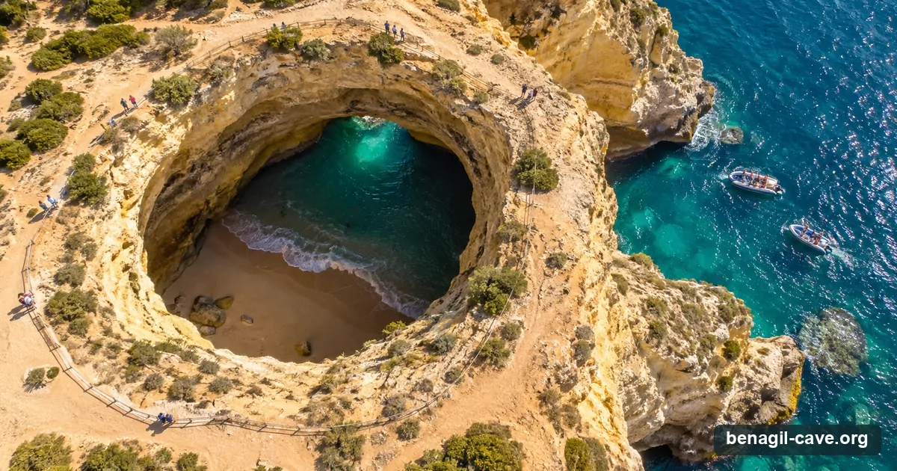
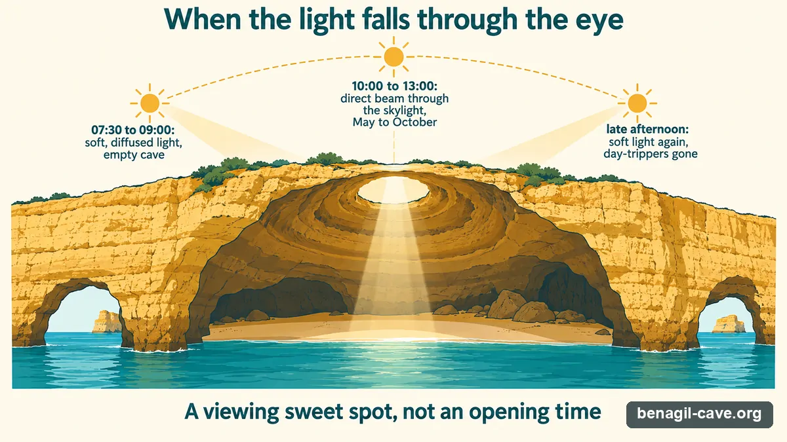

The Algarve's most photographed sea cave — a limestone dome with a round skylight, an "eye" open to the sky over a hidden beach. This is the independent guide to actually getting there: the access rules in force since 2024, which tour to take from which town, live dates for the picks, and when the light is right.
Independent picks · Bookings via GetYourGuide (we may earn a commission) · Updated 12 September 2026

The eye of Benagil from the clifftop. Every visit now happens from the water: boats at the western arch, guided kayaks at the eastern one.
~2 minMax boat time inside
1 : 6Guide-to-kayak ratio
from €25Direct boat tour
15Operators compared
<1.5 mSwell to enter
The Cave
What is Benagil Cave?
The Algar de Benagil is a sea cave on the Lagoa stretch of the Algarve coast, tucked into the cliffs between the villages of Carvoeiro and Armação de Pêra. From the water it looks like an ordinary grotto — until you are inside, under a vaulted limestone ceiling pierced by a near-perfect circular opening to the sky. Portuguese visitors call it the "olho" — the eye.
The rock is Miocene limestone, roughly twenty million years old, on a classic karst coast where slightly acidic rainwater and the Atlantic have dissolved and carved the soft stone for millennia. The cave itself was hollowed out by marine erosion; the famous oculus in the roof is a collapse feature — a section of ceiling that fell away to leave a skylight directly above the cave's small interior beach.
Benagil at a glance
Where: Lagoa municipality, central Algarve — between Carvoeiro (west) and Armação de Pêra (east).
Coordinates: 37.0868° N, 8.4238° W.
Inside a marine park: the Parque Natural Marinho do Recife do Algarve – Pedra do Valado.
How you get in: by boat, or on a guided kayak / SUP tour. Not by swimming, and you cannot land on the interior beach.
The Light
The oculus, and when the light falls
The whole reason Benagil became famous is the moment the sun lines up with the oculus and drops a clean shaft of light straight onto the sand and water below. It is at its most dramatic when the sun is high: roughly 10:00 to 13:00, from about May to October, when the beam is steepest and the water inside glows turquoise.

The beam is a light-viewing window, not a legal one. The access rules cap craft and minutes, not the clock.
Go early instead. The first departures around 07:30–09:00 trade the hard noon beam for soft, diffused light, an empty cave, and a sea that hasn't yet picked up the afternoon chop.
The trade-off most guides won't mention
Important: the 10:00–13:00 window is a light-viewing sweet spot, not a legal opening time. There is no rule that limits visits to those hours — the access rules (below) cap how long and how many craft can be inside, not the time of day.
Maps
Where it is, and where tours leave from
Benagil cave sits on an otherwise inaccessible cliff coast. Every visit starts from a town with a boat ramp or marina. The closest launches give you the most time at the cave; the farthest are scenic crossings usually paired with dolphin watching. Tap a marker for the essentials.
One-way sea times, approximate. The closest launches spend the most of your trip at the cave.
Drag to pan · click once to enable zoom. Departure times are approximate one-way sea times.
Two things decide your day: the light (time of day) and the sea (season and swell). They don't always align, which is why locals are picky about timing.
Late May – June
The sweet spot. Warm, long days, calm Atlantic, strong overhead light — and the worst of the crowds haven't arrived. Top pick for most visitors.
July – August
Peak everything: best light, warmest sea, but heavy congestion in the cave and tight parking. Go on the very first or last departures.
September
The other sweet spot. Sea still warm, light still good, crowds thinning fast. Excellent value.
November – March
Off-season. Operators run calm days only; Atlantic swell frequently closes the cave. Beautiful and empty when it works — but build in flexibility.
The crowd hack: the cave is busiest 11:00–15:00 in summer, when several tours are inside at once. Either take a sunrise departure for the cave nearly to yourself, or go late afternoon as the day-trippers head back.
Getting There
Getting to the cave
You cannot drive to Benagil cave, and you can no longer walk in from the beach. Practically everyone arrives by one of three routes: a boat tour from a nearby town, a guided kayak or SUP from Benagil beach, or a longer catamaran / speedboat trip from a marina further along the coast.
By departure town
Benagil (the beach itself)kayak / SUP only · ~150–200 m paddleGuided kayak and SUP tours launch right from the cove. No motorised cave tours leave here, and renting a kayak to go in unguided is no longer allowed.
Carvoeiro~15–20 min · high supplyThe closest motorised launch and the most cave time per euro. Boats leave straight off Praia de Carvoeiro. Tours from Carvoeiro →
Armação de Pêra~15–25 min · high supplyBeach-launched small boats from Praia dos Pescadores; easy town parking compared with Benagil village. Tours from Armação →
Portimão~30–45 min · catamaran hubThe marina with the most large boats and catamarans — comfortable, bar aboard, good for families. Tours from Portimão →
Albufeira~45–60 min · + dolphinsLonger catamaran crossing, usually bundled with dolphin watching. Closest base to Faro airport. Tours from Albufeira →
Lagos~45–60 min · scenic west runSpeedboat trips that pass the spectacular Ponta da Piedade on the way — the most scenic crossing. Tours from Lagos →
Driving & parking
From Faro airport: ~40–65 km depending on town; Albufeira ~30 min, Carvoeiro/Armação ~40–45 min, Lagos ~50 min via the A22.
Benagil village parking is the pain point — a small, part-paid clifftop lot that gridlocks by mid-morning in summer. If you're paddling from Benagil, arrive early or use the overflow lots and walk down.
Easier alternatives: marina parking at Portimão / Albufeira / Lagos, or the town lots at Carvoeiro and Armação de Pêra.
Which tour reaches what?
Boats that enter the cave, guided kayaks that paddle in, and the catamarans that view it from the entrance — with live dates for the picks.
After years of overcrowding and several rescues, the Portuguese maritime authority (Capitania do Porto de Portimão / AMN) brought in binding navigation rules for the Benagil caves: Edital 019/2024, in force since 13 August 2024, with a first amendment, Edital 009/2025, on 30 July 2025. They changed what a visit looks like, and they are still what applies in 2026. Here's what actually matters.
The 2024 rules in one picture: boats by the western arch for two minutes, guided paddlers by the eastern entrance for eight, nobody on the sand.
The three hard bans (everyone, every operator):
BannedLanding on the interior beach. You may not disembark or set foot on the sand inside the cave — this applies to private individuals and companies alike.
BannedSwimming or floating in. No access to the cave by swimming or with any flotation aid.
BannedUnguided kayak or SUP rental in the caves area — you can only enter by kayak or SUP with a certified guide.
How you can still get in
Motorised boats: enter through the western arch for a brief look only — two minutes per visit. The 2024 text allows three boats under 12 m inside at once, or a single boat over 12 m, which is why the small boats from Carvoeiro and Armação get in and the big catamarans mostly view from the entrance. Operators report the July 2025 amendment raised the small-boat cap to five.
Kayaks & SUPs: guided groups only — one guide (first-aid certified) for every six craft — entering on the east side, up to seven paddle craft inside at once under the 2024 text (operators report fourteen since the 2025 amendment), and no more than eight minutes per group.
Also banned: night navigation in the area (sunset to sunrise), scuba and free-diving in or around the caves, and fishing in or near the cave; reduced speed on approach.
Penalties for operators who break the rules run from €300 up to €216,000 under Portugal's environmental-offences law, because the cave lies inside a marine natural park. The often-repeated "€2,500 per swimmer" is not in the official text.
Sources: the Capitania do Porto de Portimão (Edital 019/2024 and Edital 009/2025, both in Portuguese), the AMN notice on the joint rules, and CCDR Algarve; the 2024 caps (3 / 1 / 7 craft, 2 and 8 minutes) are quoted from the Edital's own text; the higher 2025 caps are as reported by Algarve operators — we have not read the amendment's text ourselves, so treat those two figures as reported. Last checked 12 September 2026.
Sea & Safety
Sea conditions & safety
The Algar de Benagil opens straight onto the Atlantic. Whether you can get in on any given day comes down to swell, not tide — and the live reading below is the single most useful number for planning.
The one number that decides the day. The live reading at the top of this page uses the same three bands.
Loading live sea conditions off Benagil…
What to watch
HighAtlantic swell. Over ~1.5 m the cave closes; even below that, surge inside the cave can be dangerous. This is the main reason tours cancel — and why the boats with free cancellation are worth the small premium.
MedSun & heat. Little shade on the water; high UV May–September. Hat, water, reef-safe sunscreen.
MedBoat traffic. The cave entrance is congested in peak summer; the vessel caps exist precisely because of near-misses.
LowTide. The Algarve range is modest (under ~3 m); low tide widens the interior beach a little but rarely blocks entry on its own.
Which Tour
Which tour to book — by how it gets you in
Three kinds of trip, and they are not interchangeable: a small boat from the nearest towns that noses into the cave, a guided kayak or SUP that paddles in from Benagil beach, or a catamaran or speedboat from the marinas that views the cave from the entrance and adds dolphins. These picks book on GetYourGuide with live dates; the full comparison adds the fifteen operators you can book direct.
Four ways in. Every motorised boat gets the same two minutes; only a guided paddle gets eight. Live prices are on the cards below.
Small boats that enter the cave — Benagil beach, Carvoeiro & Armação de Pêra
Our top pick has its own calendar just below; these are the alternatives, ordered by rating and price with the higher-end trips first; the most-booked boat and the cheapest seat are always in the list, private boats last.
Prices are GetYourGuide "from" prices in US dollars, per person unless the card says "priced per boat", ratings and review counts as captured 12 September 2026; they move with season and availability — the live widget and the booking page are the reference. Sea permitting: swell over about 1.5 m closes the cave. Booking through these links may earn us a commission at no extra cost to you; it never changes the order or the verdicts.
Fifteen operators, booked direct
The full table by town: craft, price, how long you actually get at the cave, Portuguese tourism licence and rating.
From Carvoeiro: Benagil Caves and Praia da Marinha Boat Trip — 4.9★ from 1,288 reviews, from $41, free cancellation.
Sea permitting: swell over about 1.5 m closes the cave and the operators cancel or reroute — book a date with free cancellation and check the live sea conditions the evening before.
Tour Operators
Who runs the tours
We researched 15 operators across six departure towns and checked each one's Portuguese tourism licence (RNAAT) on its own website. Thirteen publish a verifiable licence number; a couple are clearly real, established operators that simply don't list one online — we say which is which, and we don't repeat the rest.
Closest & most cave time: Carvoeiro Caves, Carvoeiro Tours, Tridente, Sétima Onda (Carvoeiro / Armação de Pêra).
Kayak & SUP from Benagil beach: Benagil Eco Tours, Benagil Kayak, Blue Xperiences.
Yes — but only by boat or on a guided kayak/SUP tour. Since Edital 019/2024 (in force 13 August 2024, amended by Edital 009/2025 in July 2025) you cannot land on the sand inside the cave, and you cannot swim or float into it. Motorised boats enter only briefly through the western arch; guided kayaks and SUPs enter in small groups on the east side.
No. Disembarking or using the sand inside the algar is banned for both individuals and companies. You see the interior beach from the water; you do not set foot on it.
No. Access by swimming or with any flotation aid is prohibited under the 2024 rules, for safety reasons. The only legal ways in are by boat or guided kayak/SUP.
Short boat tours from the nearest towns (Carvoeiro, Armação de Pêra) start around €25–€35 per adult direct. Guided kayak or SUP tours from Benagil beach are roughly €25–€40. Longer catamaran or speedboat trips from Portimão, Albufeira or Lagos — usually with dolphin watching — cost more. Online, the same trips show live prices in US dollars with free cancellation on most; see the picks above and the operator comparison.
Carvoeiro and Armação de Pêra are closest (about 15–25 minutes by small boat) and give the most cave time. Portimão has the most large catamarans. Lagos and Albufeira are longer, scenic crossings usually combined with dolphins. Benagil beach itself is for guided kayak and SUP only.
The beam is most direct roughly 10:00–13:00 from about May to October. That's a viewing sweet spot, not a legal access window — there's no rule limiting visits to those hours.
Yes. Atlantic swell over roughly 1.5 m closes the cave regardless of tide, and from November to March operators run only on calm days. Check the live sea-conditions reading above before you commit to a date.
For most people, yes — the cave from the water, with the light through the oculus, is still extraordinary. But manage expectations: it's a short visit, it can be crowded, and you won't stand on the inside beach. Our is-it-worth-it page weighs both sides.
About this guide
How this guide is made
How we pick. Tours are listed on merit: how they get you in (small boat, guided paddle, or a catamaran viewing from the entrance), the town they leave from, price and reviews. Booking links go through GetYourGuide and may earn us a commission at no extra cost to you; that never changes the order or the verdicts. The fifteen operators you can book direct are on the operators page with their own websites linked and their Portuguese tourism licences (RNAAT) checked.
Grounded. Access rules are taken from the text of Edital 019/2024 as published by the Capitania do Porto de Portimão (read in full) and corroborated against CCDR Algarve; for the July 2025 amendment we have the Capitania's listing and operators' summaries, not the text itself, and every figure that comes from those summaries is marked as reported. Online prices, ratings and review counts are GetYourGuide's, captured 12 September 2026; direct prices are from operators' own sites.
Living document. Prices, schedules and the exact wording of the access rules change. Last reviewed 12 September 2026 — always confirm current rules and prices with your operator before booking.
More Benagil & coast trips, live
Everything GetYourGuide currently lists for Benagil — sunset runs, private boats, kayak and SUP tours, catamarans with dolphins from every marina on the coast — with real-time dates and free cancellation on most options.